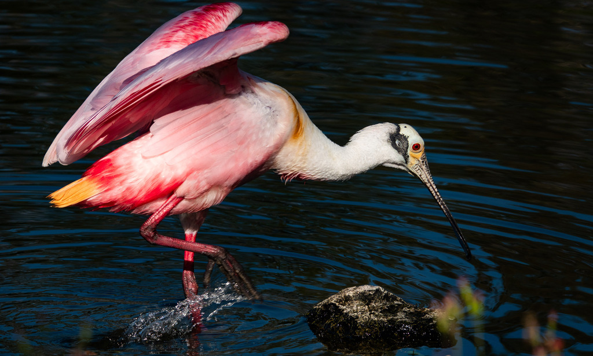

- The showstopper of Florida's wetlands, instantly recognizable by its vibrant pink plumage and unique, flat bill.
- The pink is not built in: spoonbills get their color from their food, the same way flamingos do, absorbing pigments from the shrimp and small creatures they eat.
- The spoon-shaped bill is a feeding tool. The bird sweeps it side to side through shallow water and snaps it shut by touch the instant it feels prey.
- A little over a century ago plume hunters nearly wiped them out for their feathers; the species recovered, but it is still listed as Threatened in Florida.
Pink body with deeper red on the wings and a white neck; legs pinkish-red.
Long, gray, and flattened into a spoon shape at the tip — unmistakable.
Bare and pale greenish in adults.
Flies with neck outstretched, showing off the rosy wings.
Generally quiet, giving low grunts and clucking sounds, mostly around the colony.
A medium-large pink wading bird swinging a flat, spoon-tipped bill side to side through shallow water. Nothing else in Florida looks quite like it. If you are wondering whether it is a flamingo, check the bill — the spoonbill's is straight and flat, not down-bent.
Small fish, shrimp, crayfish, crabs, aquatic insects, and other small creatures, sifted from shallow water by feel with that spoon-shaped bill.
In the shallows and along the pond edges. Their bright pink plumage stands out instantly against the water, though they are more occasional, nomadic visitors compared to our resident herons and egrets.
Present in Florida year-round, but it wanders widely in search of feeding areas, so park sightings are more occasional than for the resident herons.
Admire from a distance and never feed it. As a Threatened species sensitive to disturbance, spoonbills especially deserve their space.
- © Rob Carr (CC-BY-NC), via iNaturalist